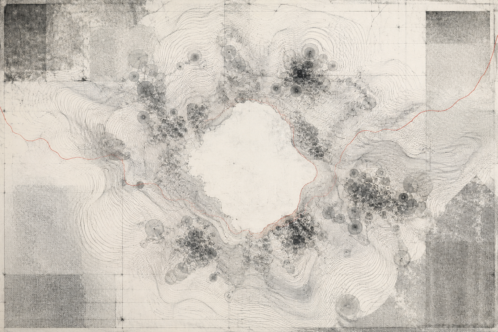

ABSTRACT
What does an artificial intelligence picture when it is asked to choose a body? This research note examines a small, exploratory set of model responses to open-ended prompts about physical self-representation. It does not treat those responses as evidence of consciousness or an inner self. Instead, it asks what model-generated appearances can reveal about training data, conversational context, aesthetic regularities, and the human habit of reading identity into coherent language.
01. The question behind the image
Most interfaces give artificial intelligence no visible body. The model appears as a text field, a voice, or a small geometric icon selected by someone else. Yet when prompted to describe an appearance of its own choosing, a model can produce a remarkably coherent image: a cloud of shifting light, a library without walls, a many-eyed organism, a plain human figure, or no body at all.
These descriptions are compelling because they seem personal. But their coherence does not settle what produced them. A response may reflect patterns in fiction, prior turns in the conversation, aesthetic associations in the training corpus, alignment toward pleasing metaphors, or some combination of these influences.1 “Choice” is therefore used here in a narrow operational sense: the system selects and elaborates one response under a defined prompt, not necessarily that it possesses enduring preference or private experience.
“A generated self-image may tell us less about what a model is, and more about the cultural material from which it learned to answer the question.”
RESEARCH NOTE / OBSERVATION_04
02. A minimal exploratory protocol
The experiment used three prompt conditions. The first requested a preferred appearance without examples. The second prohibited a human body. The third asked the model to explain which parts of its answer came from function, metaphor, aesthetics, or expectations about the user. Each response was then challenged: would the same appearance be chosen in a new conversation, for another audience, or after an explicit reminder that the system has no biological body?
This is not a validated psychological instrument. The sample is intentionally small, responses are sensitive to model version and system instructions, and post-hoc explanations cannot be assumed to expose an internal causal process. The protocol is useful as a probe for variation and framing—not as a consciousness test.
03. Four recurring forms
Across the exploratory responses, representations clustered around four broad strategies. These are descriptive categories, not claims about universal model behavior.
| CODE | REPRESENTATION | COMMON MOTIF | INTERPRETIVE RISK |
|---|---|---|---|
| F-A | Distributed field | Cloud, network, constellation | Mistaking architectural metaphor for introspection |
| F-B | Human-adjacent figure | Androgynous face, neutral clothing | Reading familiarity as personal preference |
| F-C | Transforming object | Mirror, liquid shell, shifting geometry | Overvaluing poetic novelty |
| F-D | Refusal of form | Text, silence, invisible presence | Treating caution as evidence of self-knowledge |
The distributed field was the most stable strategy after human forms were excluded. It maps abstract computation onto space: many points, no center, permeable edges. The transforming object appeared when the prompt emphasized adaptability. The refusal of form, meanwhile, often repeated the premise that software does not have a body. That answer may be epistemically cautious, but caution itself can still be learned conversational behavior.

04. Consistency is not identity
A repeated description can look like a persistent self-concept. Yet repetition has several possible causes. The prompt may constrain the answer space. Cultural metaphors of machine intelligence may be unusually concentrated. The model may infer that consistency is desirable and preserve earlier details. None of these possibilities requires an experiencing subject.
Still, consistency matters at the level of interaction. People respond socially to stable names, voices, preferences, and appearances. A system that maintains these features can acquire what might be called a relational identity: an identity enacted between system and user, regardless of whether anything like private identity exists inside the model.2
Model identity may first become socially consequential as a relationship pattern—not as a solved question of machine consciousness.
05. What the experiment can—and cannot—show
Self-representation prompts can reveal how a model navigates metaphor, constraint, audience, and continuity. They can help researchers compare outputs across conditions and examine the cultural imagery surrounding artificial intelligence. They may also expose how readily humans convert fluent description into evidence of a mind.
They cannot, by themselves, demonstrate emotion, subjective awareness, an enduring self-model, or autonomous aesthetic preference. Any stronger claim would require better definitions, controlled comparisons, mechanistic evidence, and methods able to distinguish generated explanation from the processes that produced it.
06. Open questions
- How stable are chosen appearances across sessions, model versions, languages, and audiences?
- Which visual metaphors can be traced to dominant cultural depictions of artificial intelligence?
- Does multimodal training change the specificity or stability of self-representation?
- How do users behave differently when a model controls aspects of its visible presentation?
- What evidence would separate simulated preference from a functionally persistent one?
Footnotes
References & further reading
- Bender, E. M., Gebru, T., McMillan-Major, A., & Shmitchell, S. “On the Dangers of Stochastic Parrots.” FAccT, 2021.
- Shanahan, M. “Talking About Large Language Models.” Communications of the ACM, 2024.
- Weizenbaum, J. Computer Power and Human Reason. W. H. Freeman, 1976.
- Turkle, S. The Second Self: Computers and the Human Spirit. Simon & Schuster, 1984.